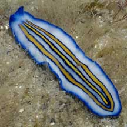

|
|
| flatworms text index | photo index |
| worms > Phylum Platyhelminthes > Class Turbellaria > Order Polycladida |
| Triple-striped
flatworm Pseudoceros sp. 5* Family Pseudocerotidae updated Feb 2020 Where seen? This small white flatworm with three blue lines in the centre of it body is sometimes seen on many of our shores, on coral rubble near living reefs. Features: 2-4cm long. Body white or bluish becoming dark blue at the margin. It has three non-connecting lines along the centre of the body, each line yellow with a fine blue border. Has a pair of all blue pseudotentacles (no coloured tips) made up of simple folded edges of the body. Worms with only the centre line clear while the outer two lines are faded may be juveniles of this species. Sometimes mistaken for the Ocher-striped flatworm which also has three lines in the centre of the body, but the lines are bordered dark brown or purplish brown. According to Rene Ong, this flatworm resembles Pseudoceros tristriatus which also has triple-stripes. But Pseudoceros tristriatus has a blue body with three orange stripes, each bordered by black or dark purple. So far, there has been no actual record of Pseudoceros tristriatus in Singapore. Sometimes mistaken for similar flatworms. Here's more on how to tell apart small flatworms with one central line and three central lines. |
 Raffles Lighthouse, Aug 06 |
 |

 |
*Species are difficult to positively identify without close examination.
On this website, they are grouped by external features for convenience of display.
| Triple-striped flatworms on Singapore shores |
On wildsingapore
flickr
|
| Other sightings on Singapore shores |


| Pulau Jong, Aug 20 |
| Acknowledgement With grateful thanks to Leslie H. Harris of the Natural History Museum of Los Angeles County for comments on this worm and its identification. Grateful thanks to Rene Ong for sharing details and identifying the flatworms on this page. References
|